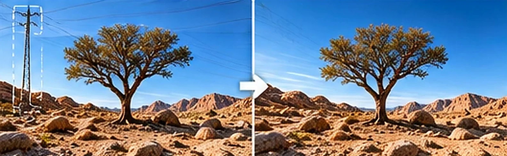
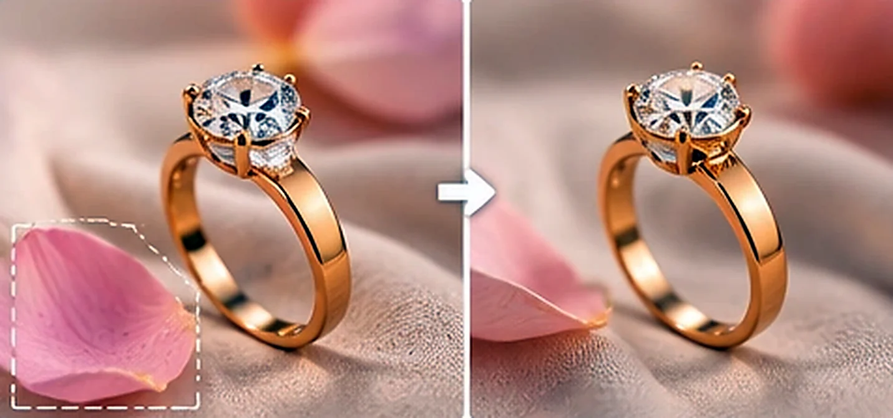

ارسم بالفرشاة فوق الشخص العابر أو السلك أو القطعة الزائدة، فيُمسح فور رفع يدك ويُملأ المكان بما يناسب الخلفية.
صور توضيحية (قبل/بعد) لفكرة الإزالة، وليست نتائج مضمونة.


أزل ما يشتّت الانتباه حول المنتج قبل نشره: غبار أو ورقة أو ظل زائد، ثم أكمل بقية التعديل في المحرّر.
من الصورة إلى النتيجة في دقائق.
في صفحتك داخل المحرّر.
فوق العنصر الذي تريد إزالته.
فيُمسح ويُكمل المكان تلقائياً.
استعمالات شائعة.
أداة PRO
إجابات سريعة عن أكثر ما يُسأل.
نعم، كل مسحة تستهلك من رصيد PRO.
تتفاوت النتيجة بحسب حجم العنصر والخلفية؛ الأجزاء الصغيرة أدق، وللكبيرة جرّب على أجزاء أصغر أو أعد المحاولة.
لا؛ يُدمج الناتج داخل منطقة الرسم فقط.
نعم، التراجع متاح في المحرّر.
لا، الممحاة تحذف العنصر وتملأ مكانه. لنقله وتحريكه استعمل «التقاط العناصر»، ولا تستعمل «نزع الخلفية» لحذف شيء من وسط الصورة.
نعم: يصلك تنبيه تلقائي في لوحة التحكم (وإشعار المتصفح إن سمحت به) عندما يقترب رصيد PRO من النفاد، وتنبيه آخر عند نفاده. لا تُعرض لك أي أرقام استهلاك، وتتوقف الأدوات التي تستهلك الرصيد وحدها عند النفاد بينما تبقى بقية الأدوات تعمل.